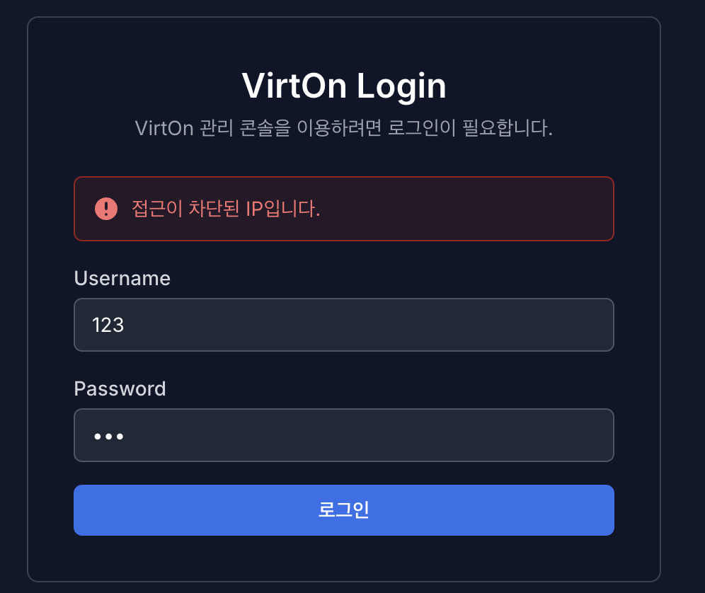

2. 로그인 (Login)#

로그인 페이지는 VirtOn의 루트 페이지입니다.
로그인 : VirtOn을 이용하기 위해서는 VirtOn 전용 아이디와 비밀번호가 필요합니다.
기본 관리자 계정 : 초기 아이디는 admin, 비밀번호는 Admin001! 입니다.
1.1. 로그인 실패 정책#


로그인을 실패하는 상황에 대한 보안 정책입니다.
계정 정보 불일치 : 유저명(아이디) 및 비밀번호를 틀릴 시, “아이디 또는 비밀번호가 올바르지 않습니다.” 문구가 출력됩니다.
로그인 시도 차단 : 로그인을 짧은 시간 안에 5회 이상 시도 시, 같은 IP에서는 로그인 시도가 10분 동안 차단됩니다.
IP를 기준으로 차단되므로, 하나의 IP에서 각각 다른 아이디로 5회 이상 시도하여도 차단됩니다.
1.2. 관리자 비밀번호 변경 페이지#

첫 관리자 계정 로그인 후 이동되는 비밀번호 변경 페이지입니다.
필수 변경 정책 : 기본 제공되는 관리 계정은 첫 로그인 시, 비밀번호를 무조건 변경해야 합니다. (변경하지 않으면 VirtOn 서비스를 이용할 수 없습니다.)
비밀번호 복잡도 : 비밀번호를 변경하기 위해서는 다음과 같은 조건이 필요합니다.
영문 대/소문자, 숫자, 특수문자 포함 9자 이상
동일 문자 3회 연속 금지
키보드/숫자 연속 순차 입력 금지
사용자 아이디와 동일하게 입력
이전 비밀번호 재사용이 불가
확인 절차 : 정확성을 위해 비밀번호는 한 번 더 입력하며, 비밀번호가 조건에 맞게 올바르게 작성되어야 변경이 가능합니다.

다음과 같이 (“1234” 입력 시), 만족한 조건은 체크 표시로 UI가 달라지며 편의성을 제공합니다.
조건 만족과 새 비밀번호 확인이 끝날 때 까지는 비밀번호 변경 버튼이 활성화되지 않습니다.

단, 조건 만족과 새 비밀번호 확인이 끝났다 해도 비밀번호 변경 버튼을 클릭 시, 이전 비밀번호를 재사용 한다면 에러 메시지와 함께 변경이 불가능합니다.
2. 로그아웃#
2.1. 로그아웃 및 세션 만료#


VirtOn의 사용을 종료하거나 세션이 만료되었을 때의 정책입니다.
로그아웃 방법 : 오른쪽 상단 계정 아이콘을 눌러 로그아웃 합니다.
Proxmox 연동 : 로그아웃 시, 연결된 Proxmox API 연결도 함께 로그아웃 됩니다.
세션 지속 시간 : 세션의 지속 시간은 3시간입니다. 3시간이 지나면 세션이 만료되어 VirtOn 로그인을 다시 진행하여야 합니다.
세션 만료 시 편의성 : 단, 세션 만료로 인한 자동 로그아웃의 경우 Proxmox API 정보를 다시 작성하지 않아도 됩니다.
3. 블랙리스트 & 화이트리스트#
VirtOn 시스템은 외부의 무분별한 접속 시도와 해킹 위협으로부터 시스템을 보호하기 위해 강력한 IP 접근 제어 시스템을 운영합니다. 관리자는 신뢰할 수 있는 IP(화이트리스트)를 등록하여 보안을 강화할 수 있습니다.
3.1. 로그인 관련 블랙리스트 & 화이트리스트#

로그인 실패 블랙리스트 : 최근 1시간 내 3번의 로그인 임시 차단 (10분 차단)이 있을 시, 비정상적인 접근으로 판단하여 해당 접속 IP가 블랙리스트에 등재되어 차단됩니다.

화이트리스트에 포함되지 않은 IP 접근 시 : 화이트리스트 IP가 미설정 상태일 때는 접근 제한이 없으나, 화이트리스트가 설정되면 등록된 IP만 로그인이 허용됩니다.